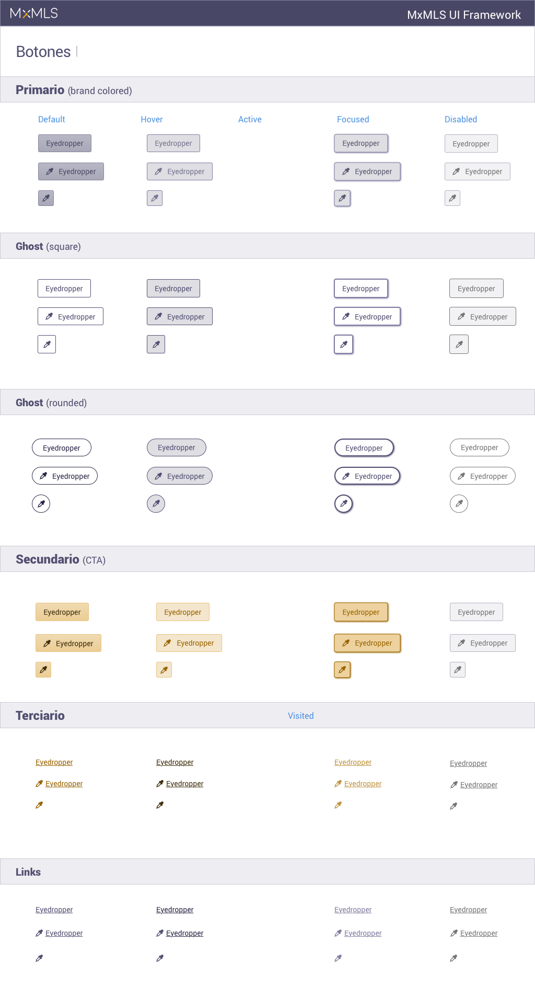
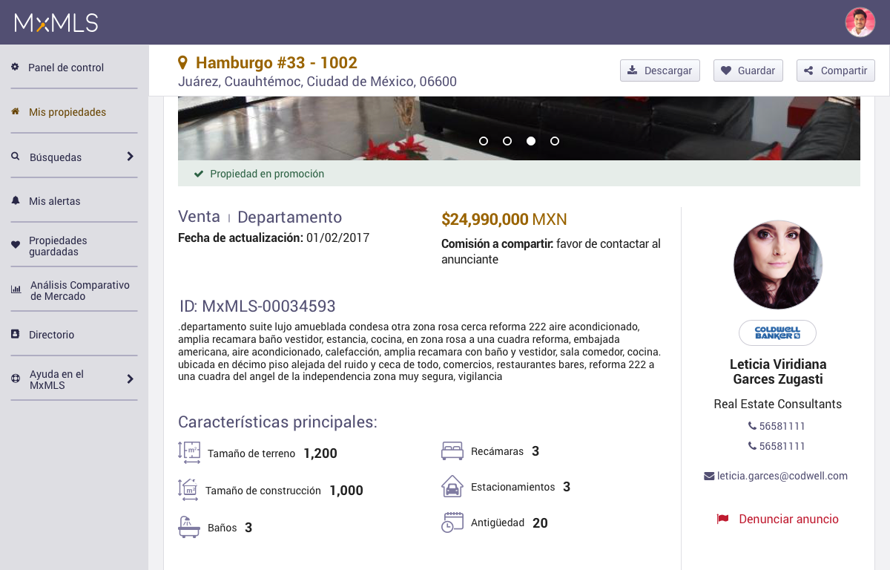

Los Multiple Listing Services (MLS)son herramientas que ayudan a los agentes inmobiliarios a encontrar propiedades en venta y renta. También sirven para generar datos sobre los precios de cierre e información sobre la tipología de estos inmuebles.. Con estas herramientas pueden ayudar a sus clientes a encontrar propiedades más fácilmente y a un precio justo.
La MxMLS es una plataforma cerrada que reúne a las principales inmobiliarias del país y ofrece herramientas para facilitar el trabajo de los brókers.
A partir de investigaciones con usuarios, se definieron tres tipos de personas como usuarios del sitio: el bróker, el dueño de la oficina donde trabaja esta bróker y los desarrolladores que buscan información para sus proyectos.
A partir de entrevistas con usuarios se identificó un problema en la interfaz: la falta de contraste y legibilidad. Este problema generaba que los brókers, principalmente gente mayor, no utilizaran la plataforma, por lo que se decidió hacer un rediseño de la interfaz.
Para el rediseño se definió una paleta primaria con un contraste AAA. Se mantuvo un look and feel del tipo skeuomorph, ya que los usuarios se confundían con las interfaces tipo flat. Por ejemplo, no sabían si un elemento era un botón o una etiqueta. También se tuvo cuidado con los tamaños de las tipografías, que fuera lo suficientemente grande para poder leer cómodamente.

A partir de estas primeras aproximaciones se construyó un sistema de diseño basado en atomic design. Se dividieron las pantallas en elementos como: botones, inputs de formularios, tipografías, etc. De esta manera se creó una librería, en SketchApp, a través de “símbolos” reutilizables que permiten crear prototipos de alta definición en poco tiempo. Además de poder actualizar las diferentes pantallas de manera rápida.
Una vez creada la estructura de esta librería se fueron vistiendo las secciones del sitio poco a poco y actualizando la librería con los nuevos elementos.. Sin embargo, habían interacciones que los usuarios seguían sin entender, esto era debido a la disposición de los elementos en el sitio.
La disposición de los elementos en el sitio hacía dificil a los usuarios encontrar botones para guardar propiedades y seguir los flujos para realizar acciones como realizar un análisis comparativo de mercado.

Se realizaron pruebas con usuarios para detectar los puntos de estrés, donde los usuarios no entendían o no encontraban los elementos. A través de entrevistas a profundidad y pruebas de usabilidad se detectaron las áreas de mejora de la plataforma.
Por otro lado, en el menú lateral existían secciones desactualizadas como videotutoriales con la interfaz anterior, o nomenclaturas que confundían al usuario como "propiedades guradadas" y "búsquedas guardadas". Por lo que se decidió trabajar sobre la arquitectura de la información del sitio.
Para esto se utilizó el método card sorting para agrupar elementos parecidos y eliminar los inecesrios del menú principal. Aún se trabaja para reducir el número de secciones, por ejemplo en la búsqueda en la que tenemos tres tipos.
La plataforma se comunica con los usuarios a través de correos electrónicos para informarles sobre la actividad de sus propiedades, las propiedades que han guardado y las nuevas propiedades disponibles para sus alertas.
Sin embargo, estos elementos no correspondían con el diseño actual. Fueron actualizados y se mejoraron los copys y las landing pages a las que dirigen los flujos. También se integraron nuevos correos para incentivar a los usuarios a regresar a la plataforma y comunicarse con otros usuarios.
Por último, se creó un newsletter para informar a los usuarios sobre las mejoras de la plataforma a nivel producto, como nuevas herramientas y contratos con más inmobiliarias. Todo esto con el fin de atraer a más usuarios.